| サイズガイド |
| 体型には個人差があり、また、メーカーやデザインによってもサイズに若干の差があるため一概に申上げられません。 |
| 弊社での表記サイズは商品の実寸サイズとなりますので、恐れ入りますが、予め商品販売ページの商品情報にてサイズをご確認の上、ご注文ください。 |
| 商品サイズの採寸基準については「サイズの測り方」をご覧くださいませ。 |
| トップス |
| 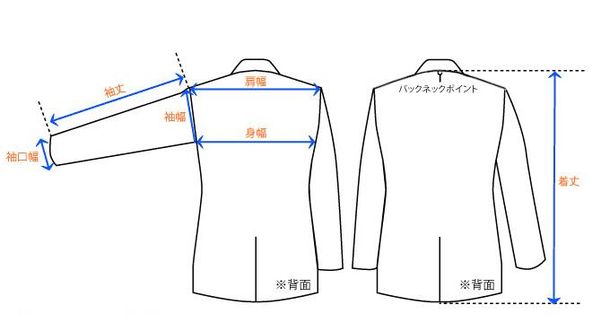 |
|
肩幅：セットインスリーブ縫い目上部の左右直線寸法
着丈：背面のネック中心から裾までの直線寸法 身幅：脇下間の左右直線寸法 袖丈：セットインスリーブ縫い目上部から袖先上部までの寸法 袖幅：肩先から脇下までを直線で測り2倍した寸法 袖口幅：袖口の両端間の直線寸法 |
| ラグランスリーブ |
| 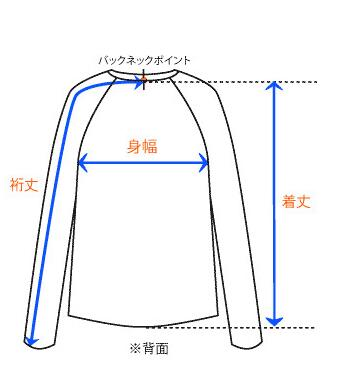 |
|
裄丈:バックネットポイントから肩を通って袖口までの寸法
身幅：両軸の付け根下の直線寸法(バストは身幅×2です)。 着丈：バックネックポイントから、裾までの直線寸法 |
| パンツ |
| 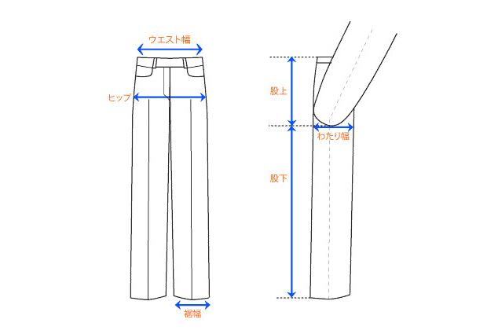 |
|
ウエスト：平置きにしたパンツ上部の淵添いを計測し、2倍した寸法
ヒップ：ファスナーやポタンを開じ、ファスナー止まりの位置の直線寸法x2 裾幅：裾の両脇間の直線寸法 股上：ウエストベルト脇の上端から内股合わせ部分までの直線寸法 股下：内股合わせから内股の縫い目に沿った裾までの直線寸法 わたり幅：内股合わせ部分の横幅の直線寸法 |
| スカート、ワンピース |
| 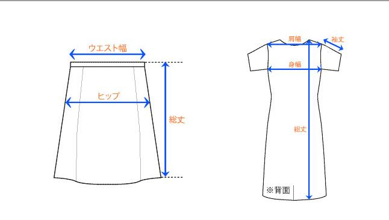 |
|
ウエスト：平置きにしたウエストの淵添いを計測し、2倍した寸法
総丈：スカート、ワンピース上端から裾までの最長の直線寸法 ヒップ：スカート上端から18cm下の位置の直線寸法×2 肩幅：縫い目上部の左右直線寸法 身幅：両軸の付け根下の直線寸法 袖丈：縫い目上部から袖先上部までの寸法 |
| キャミソール |
| 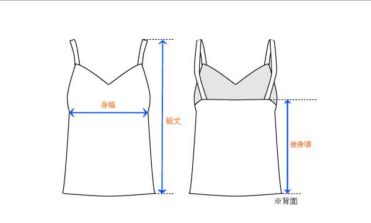 |
|
総丈：紐を伸ばした状態で、裾までの直線距離を測る。ストラップ調整可の場合、最短と最長を測ります。
後身頃：背面の最長部分を直線距離で測ります。 |
| ハット、キャップ |
| 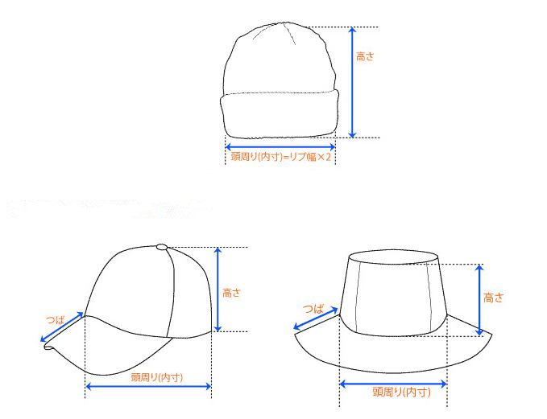 |
| 頭周り(内寸)：置いた状態で帽子内側の一周の距離。 アジャスターの付いた物は、最短距離～最長距離を測ります。 |
| パンプス、スニーカー |
| 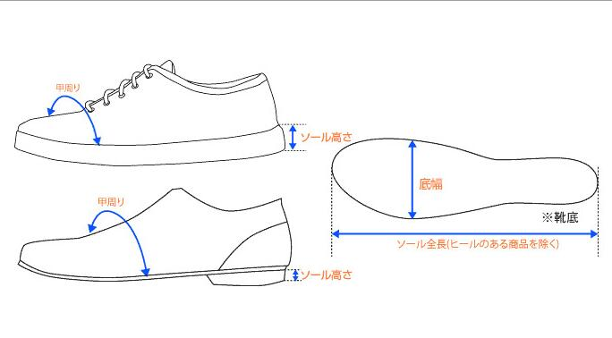 |
| 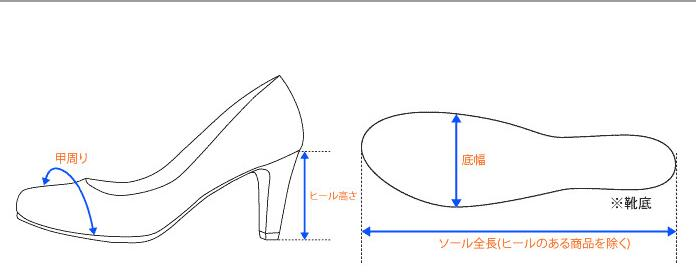 |
|
ヒール高さ（ソール高さ）：付け根から地面に垂直に測った長さ
甲周り：足幅が最大となる点を、ぐるっと1周測った値 |
| ブーツ |
| 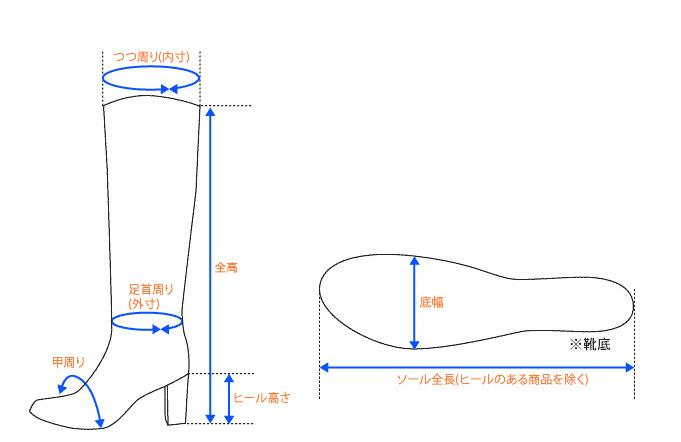 |
|
つつ周り：履き口の内周
足首周り：足首付近一番細い箇所の内周 全高=筒丈＋ヒール高さの長さ（垂直計測） |
| 傘 |
| 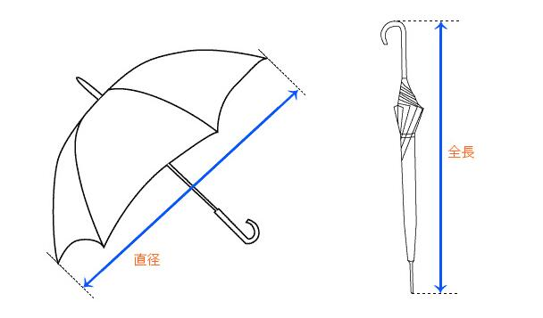 |
| トートバッグ、バックパック |
| 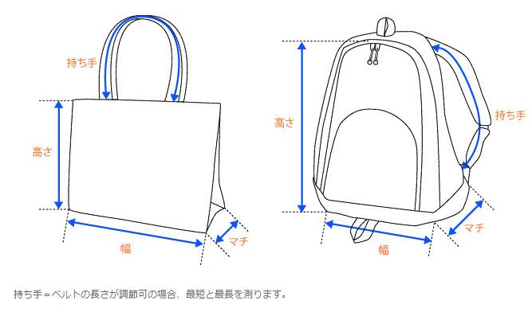 |
| 手袋、マフラー、ストール |

|